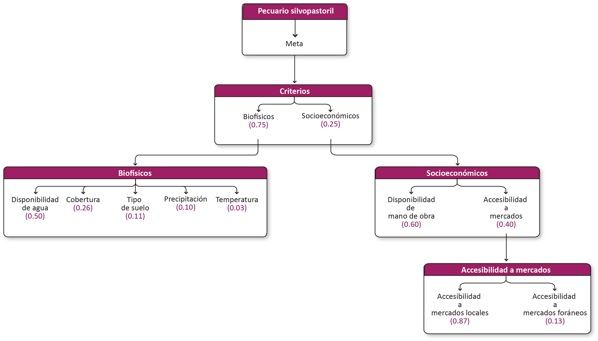
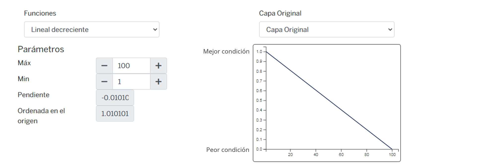
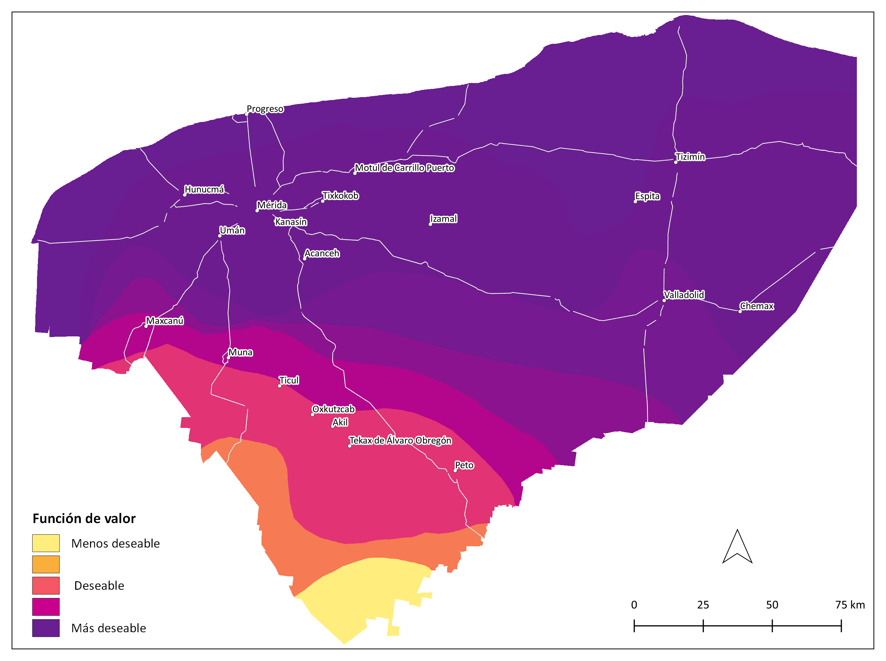
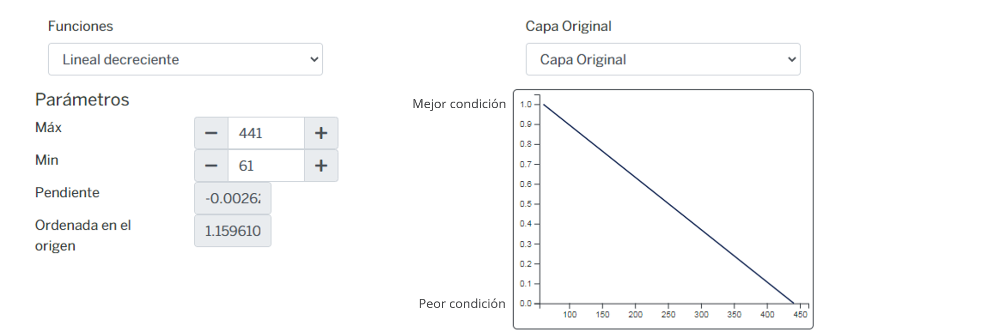
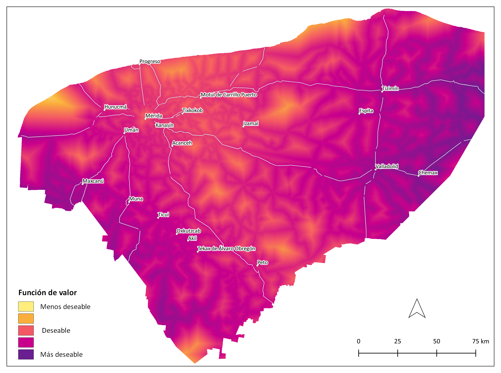
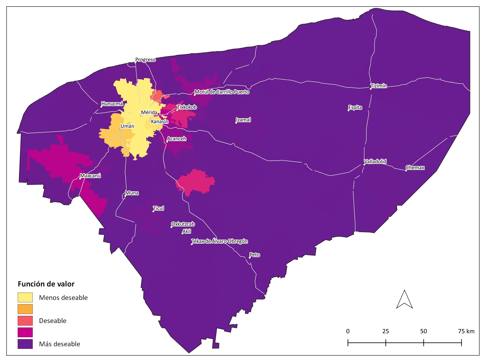

Silvopastoril¶
Sistema de producción bovina integrada a especies arbóreas, arbustivas con gramíneas forrajeras.
Modelo AHP del sistema de alimentación silvopastoril
Criterios¶
Biofísicos¶
| Criterio | Definición |
|---|---|
| Cobertura | Tipo de uso de suelo y vegetación que determina la carga animal y la biodiversidad vegetal. |
| Temperatura | Temperatura ambiente máxima (promedio) que afecta el desempeño productivo de los animales en pastoreo, aunque aumenta la productividad de pastoreo. |
| Precipitación | Precipitación promedio, cantidad y distribución del agua de lluvia para mantener la producción de pasto o sustento para la nutrición de los animales |
| Tipo de suelo | Características físicas (profundidad, pedregosidad) y químicas (MO, Nitrógeno) del suelo para soportar la producción de pasto o sustento para la nutrición de los animales. |
| Disponibilidad de agua | Acceso a la posibilidad de extraer agua del acuífero para el consumo del ganado (nivel piezométrico) |
Cobertura¶
Tipo de uso de suelo y vegetación que determina la carga animal y la biodiversidad vegetal.
Función de valor
| ID | Categoría | Expresión verbal | FV |
|---|---|---|---|
| 1 | Acuícola | Nula | 0.00 |
| 2 | Agricultura De Riego Anual | Baja | 0.56 |
| 3 | Agricultura De Riego Anual Y Permanente | Baja | 0.56 |
| 4 | Agricultura De Riego Permanente | Baja | 0.56 |
| 5 | Agricultura De Riego Semipermanente | Baja | 0.56 |
| 6 | Agricultura De Riego Semipermanente Y Permanente | Baja | 0.56 |
| 7 | Agricultura De Temporal Anual | Baja | 0.56 |
| 8 | Agricultura De Temporal Anual Y Permanente | Baja | 0.56 |
| 9 | Agricultura De Temporal Permanente | Baja | 0.56 |
| 10 | Agricultura De Temporal Semipermanente | Baja | 0.56 |
| 11 | Cuerpo de agua | Moderada | 0.70 |
| 12 | Bosque Cultivado | Baja | 0.56 |
| 13 | Manglar | Nula | 0.00 |
| 14 | Palmar Inducido | Baja | 0.56 |
| 15 | Pastizal Cultivado | Extremadamente alta | 1.00 |
| 16 | Pastizal Halófilo | Muy baja | 0.33 |
| 17 | Pastizal Inducido | Extremadamente alta | 1.00 |
| 18 | Sabana | Muy baja | 0.33 |
| 19 | Selva Baja Espinosa Subperennifolia | Moderada | 0.70 |
| 20 | Selva Mediana Subcaducifolia | Muy alta | 0.87 |
| 21 | Selva Mediana Subperennifolia | Muy alta | 0.87 |
| 22 | Sin Vegetación Aparente | Nula | 0.00 |
| 23 | Tular | Muy baja | 0.33 |
| 24 | Urbano Construido | Nula | 0.00 |
| 25 | Vegetación De Dunas Costeras | Muy baja | 0.33 |
| 26 | Vegetación De Petén | Muy baja | 0.33 |
| 27 | Vegetación Halófila Hidrófila | Nula | 0.00 |
| 28 | Vegetación Secundaria Arbustiva De Manglar | Muy baja | 0.33 |
| 29 | Vegetación Secundaria Arbustiva De Selva Baja Caducifolia | Alta | 0.80 |
| 30 | Vegetación Secundaria Arbustiva De Selva Baja Espinosa Caducifolia | Alta | 0.80 |
| 31 | Vegetación Secundaria Arbustiva De Selva Baja Espinosa Subperennifolia | Alta | 0.80 |
| 32 | Vegetación Secundaria Arbustiva De Selva Baja Subcaducifolia | Moderada | 0.70 |
| 33 | Vegetación Secundaria Arbustiva De Selva Mediana Caducifolia | Alta | 0.80 |
| 34 | Vegetación Secundaria Arbustiva De Selva Mediana Subcaducifolia | Alta | 0.80 |
| 35 | Vegetación Secundaria Arbustiva De Selva Mediana Subperennifolia | Muy alta | 0.87 |
| 36 | Vegetación Secundaria Arbórea De Manglar | Muy baja | 0.33 |
| 37 | Vegetación Secundaria Arbórea De Selva Baja Caducifolia | Alta | 0.80 |
| 38 | Vegetación Secundaria Arbórea De Selva Baja Espinosa Caducifolia | Moderada | 0.70 |
| 39 | Vegetación Secundaria Arbórea De Selva Baja Espinosa Subperennifolia | Alta | 0.80 |
| 40 | Vegetación Secundaria Arbórea De Selva Baja Subcaducifolia | Alta | 0.80 |
| 41 | Vegetación Secundaria Arbórea De Selva Mediana Caducifolia | Alta | 0.80 |
| 42 | Vegetación Secundaria Arbórea De Selva Mediana Subcaducifolia | Muy alta | 0.87 |
| 43 | Vegetación Secundaria Arbórea De Selva Mediana Subperennifolia | Muy alta | 0.87 |
| 44 | Vegetación Secundaria Herbácea De Selva Baja Caducifolia | Alta | 0.80 |
| 45 | Vegetación Secundaria Herbácea De Selva Mediana Caducifolia | Alta | 0.80 |
| 46 | Vegetación Secundaria Herbácea De Selva Mediana Subcaducifolia | Alta | 0.80 |
| 47 | Área Desprovista De Vegetación | Baja | 0.56 |
Mapa

Temperatura¶
Temperatura ambiente máxima (promedio) que afecta el desempeño productivo de los animales en pastoreo, aunque aumenta la productividad de pastoreo.
Función de valor

Mapa

Precipitación¶
Precipitación promedio, cantidad y distribución del agua de lluvia para mantener la producción de pasto o sustento para la nutrición de los animales.
Función de valor

Mapa

Tipo de suelo¶
Características físicas (profundidad, pedregosidad) y químicas (MO, Nitrógeno) del suelo para soportar la producción de pasto o sustento para la nutrición de los animales.
Función de valor
| ID | Categoría | Expresión verbal | FV |
|---|---|---|---|
| 1 | Arenosol | Baja | 0.56 |
| 2 | Cambisol | Moderada | 0.70 |
| 3 | Chernozem | Moderada | 0.70 |
| 4 | Gleysol | Moderada | 0.70 |
| 5 | Histosol | Nula | 0.00 |
| 6 | Leptosol | Alta | 0.80 |
| 7 | Luvisol | Alta | 0.80 |
| 8 | Nitosol | Extremadamente alta | 1.00 |
| 9 | Phaeozem | Baja | 0.56 |
| 10 | Regosol | Moderada | 0.70 |
| 11 | Solonchak | Nula | 0.00 |
| 12 | Vertisol | Moderada | 0.70 |
Mapa

Disponibilidad de agua¶
Acceso a la posibilidad de extraer agua del acuífero para el consumo del ganado (nivel piezométrico).
Función de valor
Mapa
Socioeconómicos¶
| Criterio | Definición |
|---|---|
| Accesibilidad a mercados locales | Distancia a puntos de venta local de becerros (Tizimín, Valladolid, Mérida y Tzucacab) |
| Accesibilidad a mercados foráneos | Distancia a puntos de venta de carne (Campeche, Cancún, Playa del Carmen). |
| Disponibilidad de mano de obra | Población económicamente activa ocupada en el sector primario (%) |
Accesibilidad a mercados¶
Accesibilidad a mercados locales
Distancia a puntos de venta local de becerros (Tizimín, Valladolid, Mérida y Tzucacab).
Función de valor

Mapa

Accesibilidad a mercados foráneos
Distancia a puntos de venta de carne (Campeche, Cancún, Playa del Carmen).
Función de valor
Mapa
Disponibilidad de mano de obra¶
Población económicamente activa ocupada en el sector primario (%).
Función de valor

Mapa
